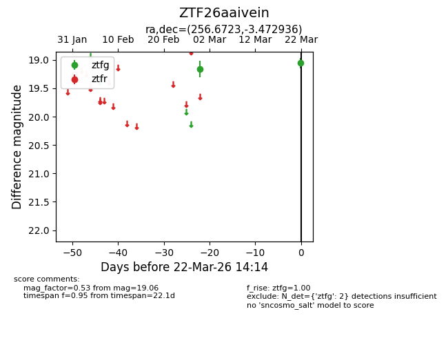
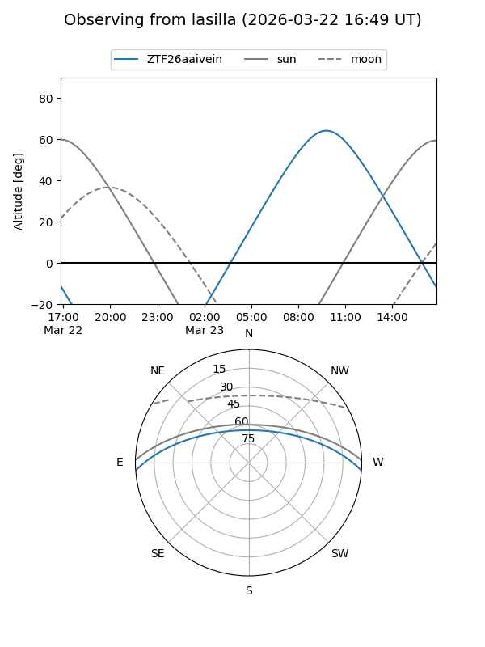
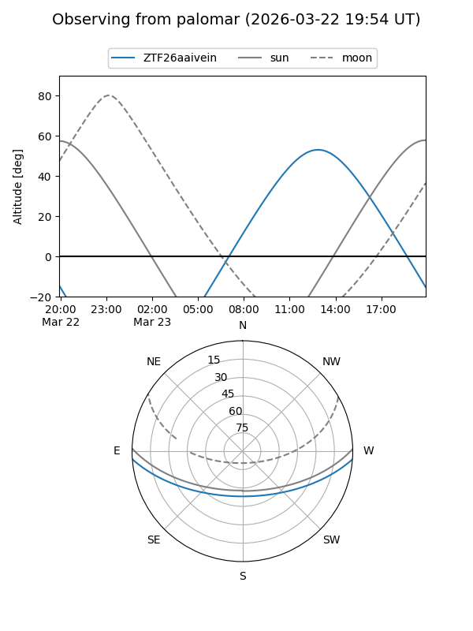

ZTF26aaivein
Target ZTF26aaivein at 2026-03-22 14:16
Aliases and brokers:
FINK: link
Lasair: link
ALeRCE: link
alt names
ZTF26aaivein (ztf,fink_ztf)
Coordinates:
equatorial (ra, dec) = 256.6723,-3.47294
equatorial (HMS+DMS) = 17:06:41.36,-03:28:22.57
galactic (l, b) = (17.0543,+21.37142)
Flags:
Photometry:
last ztfg=19.06
2 ztfg detections
Lightcurve

Visibility


Additional plots